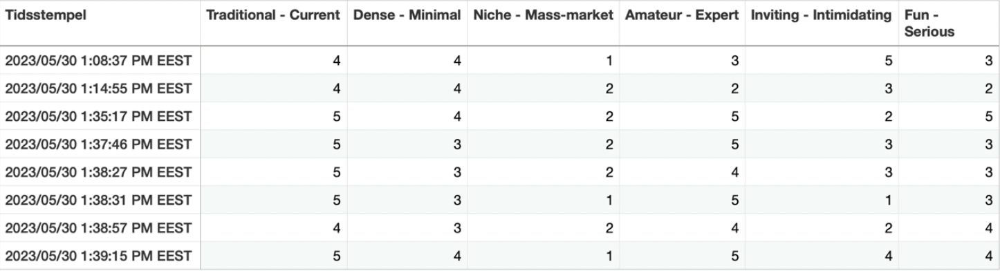

TEMA 5: GRUNDLÆGGENDE INDHOLD
I tema 5 lærte vi om grundlæggende videoproduktion herunder f.eks. lys, vinkler, stil, lyd og
redigering. Vi lærte også til en masse nye test, der hjælper med få brugerens holdning til en hjemmeside.
VIDEOSSITE
www.videosite.dk
Videosite opgaven gik ud på i grupper, at producere en video omhandlende en passion.
Videoen
skulle redigeres i Adobe Primier cut pro og uploades, herefter skuller der kodes et videosite.
INTERVIEW

VIDEOPRODUKTION

VIRKSOMHEDSSITE
www.virksomhedssite.dk
I dette projekt var der fokus på redesign af en eksisterende hjemmeside og videoproduktion. Der
skulle laves en interview video der indeholdte b-rools, samt en kortere so-me video.
For at få en fælles
vision af vores redesign lavede vi moodboard, styltile og prototype.
Vi gjorde brug af blandt andet lighthouse, BERT og 5 seconds test under redesign proccessen, for at optimere vores
redesign.
Det var første gang vi skulle lave et forholdshvis stort og omfangede projekt i en større gruppe, dette blev gjort
overskueligt ved brug af trelloboard, SCRUM og GitHub.
MOODBOARD
STYLTILE
VIDEOPRODUKTION
PROTOTYPE
TRELLOBOARD
BERT TEST
